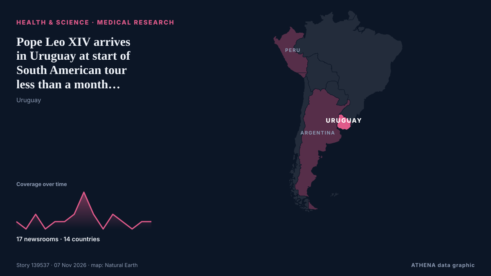

Gesundheit, Wissenschaft und Forschung
GesponsertPräsentiert von  Cybernetics and Artificial Intelligence Lab Welcome to the Cybernetics and Artificial Intelligence Laboratory, established at the Department of Business Administration of the National and Kapodistrian University of Athens. The lab is headed by Professor Dimitrios Thomakos. The lab aims to do research that can be published in top venues. Our research uses tools and methods of Artificial Intelligence, and lies in the following areas: - Forecasting - Decision making - Cyber security - Finance We are always looking forward to collaborating with exceptional students!
Cybernetics and Artificial Intelligence Lab Welcome to the Cybernetics and Artificial Intelligence Laboratory, established at the Department of Business Administration of the National and Kapodistrian University of Athens. The lab is headed by Professor Dimitrios Thomakos. The lab aims to do research that can be published in top venues. Our research uses tools and methods of Artificial Intelligence, and lies in the following areas: - Forecasting - Decision making - Cyber security - Finance We are always looking forward to collaborating with exceptional students!
Schlagzeilen werden auf Englisch angezeigt, wie veröffentlicht.

Medizinische ForschungPope Leo XIV arrives in Uruguay at start of South American tour less than a month after lung surgery
MONTEVIDEO, Uruguay (AP) — Three weeks after lung cancer surgery, Pope Leo XIV opened a three-nation tour of Latin America on Friday by declaring he felt better than he looked and crediting God, good… von The National Herald
| 25. Okt. | 45 |
|---|---|
| 26. Okt. | 83 |
| 27. Okt. | 80 |
| 28. Okt. | 79 |
| 29. Okt. | 90 |
| 30. Okt. | 83 |
| 31. Okt. | 46 |
| 1. Nov. | 34 |
| 2. Nov. | 103 |
| 3. Nov. | 71 |
| 4. Nov. | 93 |
| 5. Nov. | 63 |
| 6. Nov. | 41 |
| 7. Nov. | 7 |
Scan Reveals Four-Letter Code to 400-Year-Old Lock from Welsh Shipwreck
Nation.Cymru staff Researchers have cracked the code of a combination lock recovered from a ship wrecked off the Welsh coast more than 400 years ago. von Nation.Cymru
Democratic victories bring historic breakthroughs for women and minorities
CHICAGO: Voters across the US elected a historic slate of women, candidates of color and other underrepresented politicians on Tuesday, reshaping the face of political leadership as Democrats rode a… von Business Recorder
Cornell faculty vote 'no confidence' in university leadership after alleged fraternity gang rape
Cornell University's Faculty Senate approved a resolution Friday declaring “no confidence” in the school's top leaders, a symbolic gesture reflecting deep discontent on campus in the wake of a former… von The Canadian Press (via CityNews)
Pope Leo begins a 12-day, 3-country South America tour after his cancer surgery
Pope Leo begins his first South American tour since lung cancer surgery. von NPR World
CDC reports more than 5,000 measles cases, highest number in 35 years
Children and teenagers make up almost 60 percent of confirmed cases. von Al Jazeera English
EU and India conclude negotiations on association to Horizon Europe
European Commission Press release Brussels, 06 Nov 2026 The European Commission and India have successfully concluded negotiations on India's association to Horizon Europe, the EU's €93.5 billion… von EU Commission competition press
Energy and Water Issues Propel Democrats to Victory in Arizona
PHOENIX—Two years after President Donald Trump won Arizona with 52 percent of the vote, Democrats are poised to win a trifecta in the state House, Senate and governor’s office, and could potentially… von Inside Climate News
Iraq helps UAE arrest 20 in Captagon bust
Shafaq News- Abu Dhabi Iraq helped UAE authorities arrest 20 suspects and seize 200,000 Captagon pills and more than 30 kilograms of other drugs after the two countries exchanged intelligence, the… von Shafaq News (English)
Octopuses Can Squeeze Their Bodies Through Tiny Holes, And Scientists Are in Awe
Octopuses are notorious shape-shifters. They regularly escape their tanks by squeezing through narrow gaps, and... von ScienceAlert
China's space station sets new atomic cooling record
Chinese scientists have cooled a cloud of rubidium atoms aboard China's space station to an equivalent temperature of 9.7 trillionths of a degree above absolute zero, a record low according to the… von CGTN (China)
Unions call off 48-hour state hospital strike after draft pay deal
Six unions on Friday suspended a 48-hour strike at state hospitals planned for November 10 and 11, after the board of the state health services organisation (Okypy) approved a draft renewal of their… von Cyprus Mail
Researchers Find Residential Proxies on White House Network
In a month, 28 residential proxy services used 6 addresses, mainly between 5 p.m. and midnight, Eastern Time. von SecurityWeek
Guinea Bissau: Guinea-Bissau Cancels Controversial US-Funded Hepatitis B Vaccine Trial on Newborns
[allAfrica] Guinea-Bissau has cancelled a proposed hepatitis B vaccine trial on newborn babies following international criticism that it was unethical and potentially exploitative. von AllAfrica
Hundreds of Ice Age rock art engravings discovered hidden in plain sight
Archaeologists have discovered the third-largest assemblage of Ice Age cave art ever found in Mediterranean Iberia in a region thought devoid of cave art, transforming our knowledge of Paleolithic… von Phys.org
Libyan court convicts six people for illegal drug production
TRIPOLI, Nov 6 - A court in Libya has convicted six people of producing the psychotropic substance Captagon for trafficking, the latest move to tackle the illegal spread of the amphetamine-type… von The Straits Times
NASA's Swift space telescope plunges to Earth after 22 years in orbit
One of NASA's premier space telescopes plunged to Earth on Wednesday, ending its 22-year investigation of gamma ray bursts and exploding stars. von CBC News (alternative feed)
Scientists find signs of red blood cells and collagen in dinosaur fossils
Palaeontologists found fossilised signs of dinosaur blood and collagen in a 115-million-year-old dinosaur bone. von Times of India
Ancient coins suggest influential Iron Age king was female
Bournemouth University (BU) archaeological research has revealed that Iron Age British ruler "Verica," who was central to the Roman invasion of Britain in A.D. von Phys.org
Ancient DNA charts spread of Celtic and Germanic languages
Hundreds of millions of people today speak Germanic languages: English, Dutch, German, Danish, Swedish, etc.... von ScienceAlert
Washington state resident dies from bird flu following exposure to infected cattle
A person in Washington state has died from complications of the bird flu, the first such U.S. death in a year. von STAT News
British man infected with Ebola to be flown to UK for treatment
It is believed he is a healthcare worker who tested positive amid the outbreak in the Democratic Republic of the Congo. von Evening Standard (London)
British doctor infected with Ebola in Congo being treated in London hospital
The medical doctor was brought to the UK on a medical evacuation flight. von The Irish News (Belfast)
Manchester Christmas Markets 2026 opening and closing times as thousands set to descend on city centre
Here's what you need to know if you're visiting Manchester's Christmas markets. von Manchester Evening News
The ‘aggressive’ cancer battle behind son of a Bronco’s mission to be Wallabies’ future
A future Wallabies hopeful has endured more than most by his age. von Sydney Morning Herald
WHO approves clinical trials for two new Ebola vaccines
The World Health Organization has approved clinical trials for two new Ebola vaccines, as doctors fight to control an outbreak in Africa that has killed more than 5,300 people. von RTÉ News
Some 1,800 dead from cholera in Ebola-hit DR Congo: WHO
Cholera has killed around 1,800 people so far this year in the Democratic Republic of Congo, which is also battling its deadliest Ebola outbreak, the World Health Organization said Wednesday. von Medical Xpress
Thailand fossil teeth reveal prehistoric 'giant rat' weighing 30kg
BANGKOK: A giant rodent weighing around 30 kilogrammes roamed what is now southern Thailand 33 to 35 million years ago, scientists said, after identifying a previously unknown species from two… von New Straits Times
Three injured in violence at Athens university campus
Nov 4 - A group of people, some wearing helmets, attacked a student assembly at the University of Athens campus on Wednesday, injuring three people, Greece's medical emergency service and the… von The Straits Times
U.S. Will Drop Smuggling Charges Against Russian-Born Harvard Medical School Scientist
Prosecutors dropped the charges after a federal judge cleared the way for Kseniia Petrova to obtain evidence supporting her claim that she was being vindictively prosecuted. von The Moscow Times
38 Uzbek universities make QS Asia Rankings 2027
38 universities in Uzbekistan have been included in the QS World University Rankings: Asia 2027, with 19 making it into the top 1,000. von Kun.uz (English)
Anthrax Outbreak Kills Dozens of Hippos in DR Congo
Deadly bacterial disease confirmed in Virunga National Park as authorities warn of potential risks to nearby communities and wildlife. von News of Bahrain
Ex-Prince Andrew called to testify in civil case, 1st royal in 156 years to get witness summons
The former Prince Andrew has been called to testify as a witness in a civil fraud trial, marking what is believed to be the first time in more than 150 years that a member of the royal family has… von The Canadian Press (via CityNews)
COVID class action certified over alleged negligence at Toronto long-term care home
Lawsuit alleges Downsview and Gem were grossly negligent in their response to the pandemic, resulting in multiple outbreaks at the home. von The Globe and Mail
Uneven and Fragile Progress Against Neglected Tropical Diseases – New WHO Report
While substantial progress has been made in driving down the global burden of neglected tropical diseases (NTDs), trends are “uneven and fragile”, and several diseases are off course to meet 2030… von Health Policy Watch